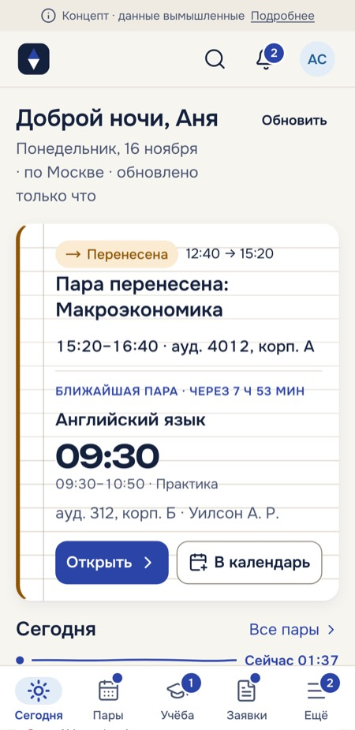
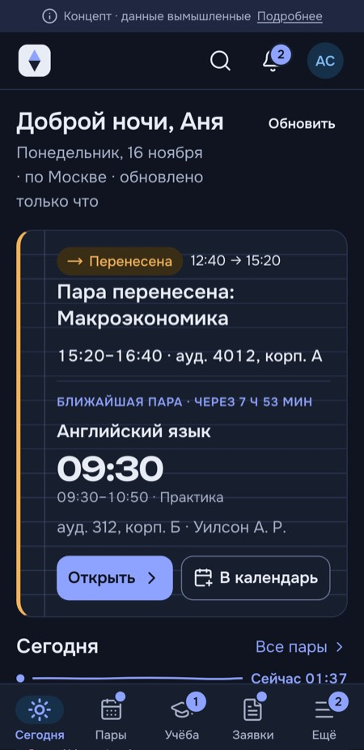
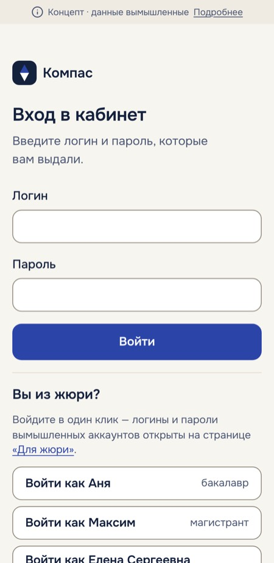
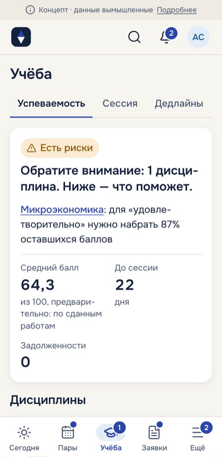
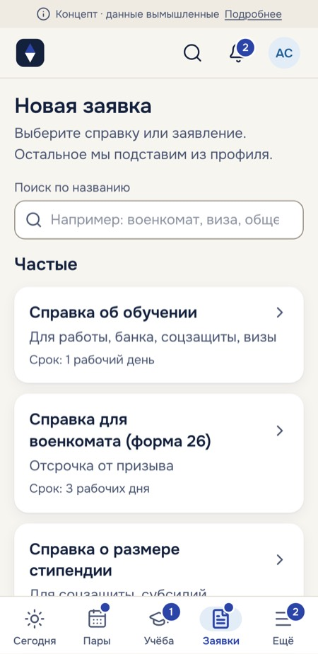
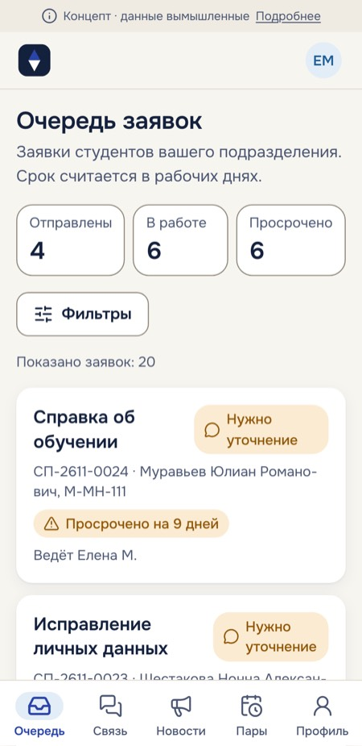
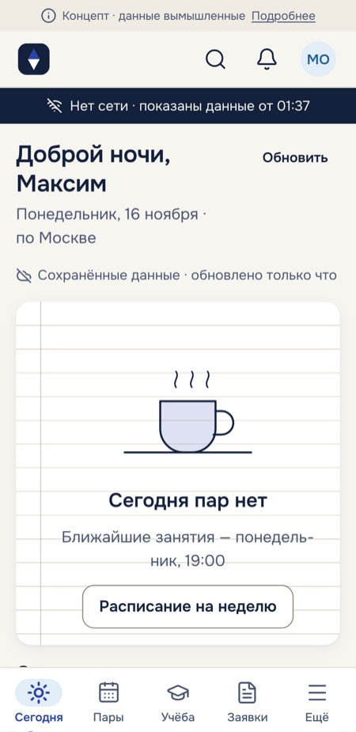
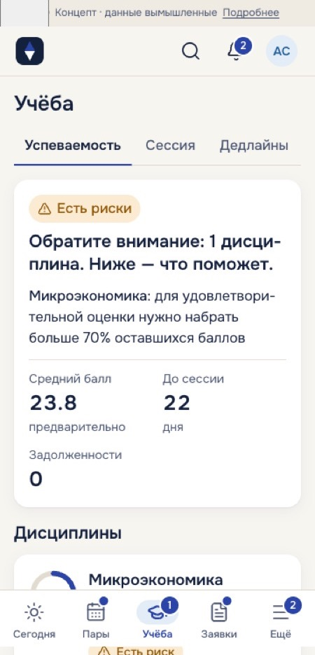
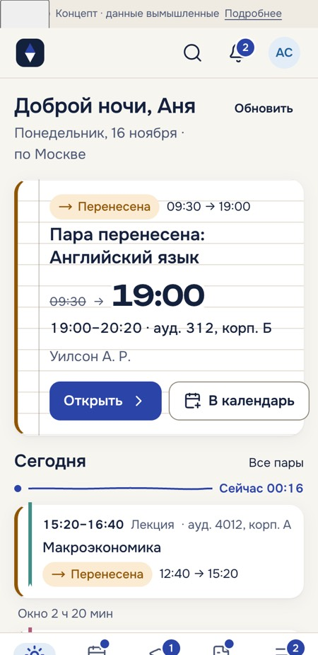
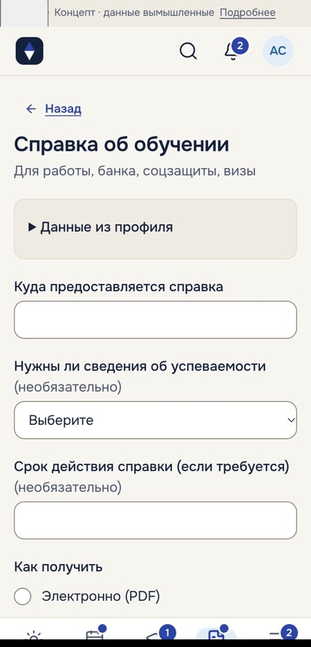

Описание процесса создания. MGIMO AI Challenge 2026, номинация «Вайб-кодинг», задание
«Цифровой деканат будущего».
Ссылки
Что
Ссылка
Прототип
<URL после деплоя> (деплой не выполнен, см. раздел 9; вписывается человеком)
Маршрут проверки за 3 минуты
<URL после деплоя>/jury
Исходный код
<ссылка на репозиторий>; резерв: архив исходников
(scripts/make-submission-archive.sh)
Видео (≤ 5 минут)
<ссылка VK Видео / RuTube>; сценарий: docs/submission/video-script.md
Тестовые аккаунты
Все аккаунты вымышленные, пароли публичны по условиям задания (источник:
db/seed/demo-credentials.ts).
Роль
Логин
Пароль
Что заложено в данных
Студент 1, бакалавриат
anna.demo
kompas-demo-anna
Сегодня перенесена пара, риск по одной дисциплине, одна справка в работе и одна готова,
три дедлайна, один горит
Студент 2, магистратура
maxim.demo
kompas-demo-maxim
Пары после 19:00, по учёбе всё в порядке, заявка ждёт уточнения, вечерний дайджест
Сотрудник деканата
elena.staff
kompas-demo-elena
Очередь заявок, объявления, изменения расписания
Как читать этот документ. Мы стараемся отделять то, что подтверждено файлами и
тестами репозитория, от того, что не проверено. Там, где данных нет (стоимость токенов,
замеры на настоящих телефонах, деплой), так и написано, цифры не придуманы. Оценка удобства
в разделе 9 синтетическая: её выполняли ИИ-субагенты, а не живые пользователи.
Содержание
Титул и ссылки
Какую проблему решает Компас и почему эти разделы (исследования, опросы, ставки)
Перечень ИИ-инструментов, IDE и сервисов
Процесс работы с ИИ: ключевые промпты, документы для агентов, «сэндвич» моделей
Скриншоты ключевых шагов: до и после, отвергнутые варианты
Как устроены вход, хранение данных и защита, простыми словами
Этапы, сделанные вручную
Работа с ошибками ИИ
Результаты проверок
Ограничения и что дальше
Источники и авторство
2. Какую проблему решает Компас и почему эти разделы
Задание: личный кабинет студента, который заменяет россыпь вузовских систем одним понятным
входом. Обязательное ядро: вход и профиль, расписание на сегодня и неделю с переносами,
оценки и сессия, заказ справки с видимым статусом, объявления деканата, напоминания о
дедлайнах. Компас реализует это ядро целиком и добавляет несколько ставок, которые мы
выбрали исходя из исследований ниже.
2.1. Что говорят исследования
Фрагментация. В исследовании личного кабинета студента РАНХиГС (Alfa Research
Center, 2026; 32 респондента, айтрекинг) сравнили кабинеты шести российских вузов: чаще
всего «кабинет» это набор несвязанных систем с отдельными входами. В одном вузе встроенное
расписание было настолько неудобным, что студенты написали своё приложение и пользовались
им [R1]. В ВШЭ функции разнесены между LMS, SmartLMS, РУЗ и приложением HSE App X, и
студенческая работа «HSE Grades» прямо называет это проблемой [R2]. Похожие жалобы есть у
University of St Andrews [R3], UniFatecie [R4] и University of Ibadan [R4b].
Частота важнее редкой сложности. Расписание смотрят каждый день, оплату раз в
семестр. Мелкая ежедневная проблема портит опыт сильнее редкой серьёзной [R1]. Поэтому
«Сегодня» и расписание получили максимум внимания.
Главная, которую не используют. У РАНХиГС все ключевые сценарии вынесли на главную,
но студенты ею не пользовались: функционал ниже первого экрана, взгляд остаётся в верхней
трети [R1]. Наш вывод: на главной не плитки сервисов, а ответ на вопрос «что сейчас», и он
помещается в первый экран 360×740.
Привычка маскирует проблемы. Свои студенты привыкают и перестают замечать сложности
[R1]. Поэтому экспертную проверку мы вели «глазами новичка» (когнитивный проход, раздел
9).
Удобство и доверие к данным связаны (UFES, Бразилия, r ≈ 0,7) [R4c].
2.2. Данные опросов студентов (собственный опрос не проводился)
Мы не проводили собственный опрос однокурсников и не придумывали ответы. Это решение
команды (SPEC §3.1a, приложение F): сфабрикованные данные недопустимы. Задание формулирует
пункт условно («если спрашивали однокурсников»). Вместо опроса мы опираемся на три
опубликованных источника ниже и указываем авторов. Данные чужих команд используются как
вторичные и только как направление, не как доказательство.
Источник и авторство
Выборка
Что берём
Национальный опрос «Образовательная среда будущего: взгляд студентов». Авторы: КА
«Университеты и маркетинг» и ГК IPR, февраль–март 2026 [R41]
n = 6 820, 48 вузов
97% пользуются сайтом и ЛК вуза; NPS сайта и ЛК около 10% (пользуются вынужденно); самый
низкий параметр среды: гибкость (6,79 из 10); стабильность и поддержка 6,90 из 10;
нестабильность платформ среди главных проблем у 21,94%; разрозненность ресурсов называют
прямо 15,48%; личная переписка с преподавателями в мессенджерах любимый канал (62,98%);
рекомендация авторов: пульс-опросы каждый семестр.
Опрос студентов МГИМО, опубликованный командой eth0-png (репозиторий
eth0-png/digital-dean, папка research), 5–6 ноября 2026 [R39]
n = 23 (распространялся через чаты курсов; выборка смещена к 3-му курсу)
С телефона важнее всего расписание (19 из 22), оценки (15 из 22), справки (12 из 22);
первым на главном экране хотят видеть ближайшую пару и аудиторию (13 из 23); справка
главный повод идти в деканат (11 из 17 обратившихся), 10 из 17 решили вопрос только
после визита; со входом с телефона проблемы у 3 из 5 столкнувшихся; обе попытки
исправить свои данные (2 из 2) не решены; просьба о справке с электронной подписью.
Исследование ЛК РАНХиГС, Alfa Research Center, 2026 [R1]
n = 32, айтрекинг и анализ эмоций
Пять ключевых сценариев (расписание, успеваемость, справка, уведомления, оплата);
приоритет по частоте; неиспользуемая главная; эффект привыкания.
Ограничение по выборке n = 23: это малая выборка конкурирующей команды, мы не проверяли её
первичные данные. Также мы использовали обезличенный разбор интерфейса настоящего ЛК МГИМО
из того же репозитория [R39] (главная это лента новостей, почти всё таблицами, оценки в
формате «99 / Отлично / A»): как факты о существующем кабинете, а не как чужие выводы. Код
конкурента не использовался.
Сводка в одном абзаце. Собственный опрос мы не проводили. Мы опирались на
национальное исследование 2026 года (6 820 студентов, 48 вузов), опубликованный опрос
студентов МГИМО (23 человека) и UX-исследование ЛК РАНХиГС с айтрекингом. Выводы сходятся:
студенты пользуются кабинетом, потому что вынуждены; главное с телефона это расписание;
больше всего мешают нестабильность, разрозненность и необходимость идти в деканат за
справкой.
2.3. Какие ставки мы сделали и откуда они
Решение в продукте
На чём основано
«Сегодня»: ближайшая пара, перенос и горящие дедлайны на первом экране
[R1] главная без плиток; [R39] ближайшая пара первой (13 из 23)
Офлайн: расписание, справки и очередь действий работают без сети (PWA)
Нестабильность платформ 21,94% [R41]; в опросе МГИМО у 3 из 5 были трудности со входом с
телефона [R39]
Справка как «посылка»: трекер статусов, PDF с QR-проверкой подлинности
Справка главный повод идти в деканат [R39]; прозрачность хода работы повышает
воспринимаемую ценность [R6]
«Что делать, чтобы дотянуть до 5/зачёта»: понятный статус семестра вместо таблицы
Запрос студентов St Andrews на визуализацию оценивания и калькулятор [R3]; шкала «98 /
Отлично / A» как в настоящем ЛК МГИМО [R39]
Дайджест уведомлений + срочные сразу, свои окна
Гибкость самый низкий параметр среды, 6,79 из 10 [R41]
Кнопка «Нашли ошибку в данных?» (заявка типа «исправить данные»)
2 из 2 попыток исправить данные не решены [R39]
Быстрые обращения с ответом в одном месте, контакты и часы консультаций в карточке пары
Личная переписка любимый канал, 62,98% [R41]; просьба из опроса МГИМО [R39]
Без него статус заявки нечем демонстрировать; требование задания к ядру
Что мы сознательно не делали: подключение к настоящим системам вуза, настоящий вход через
вузовскую учётную запись, оплата обучения. Помощник «Спросить Компас» есть, но по умолчанию
выключен (раздел 4.5).
3. Полный перечень ИИ-инструментов, IDE и сервисов
Перечень составлен по SPEC §12.7 и журналу docs/ai-log/. «Использовано»
отмечено только там, где следы остались в репозитории.
Фундамент (A1–A4), оболочка и дизайн-система (C2), PWA и офлайн (C7), экспертная оценка
(C11), правка ТЗ до 1.3
Разработка
Да, docs/ai-log/
Claude Code, Claude Sonnet 5.5
Экраны и серверная часть по этапам C1, C3–C6, C8–C10, C12
Разработка
Да
GLM 5.3 Flash в OpenCode
23 бэкенд-тикета по контрактам: чистые функции, эндпоинты, сид-данные, черновики
справочника
Фаза B
Да, docs/ai-log/models.md
Субагенты Claude Code (.claude/agents)
security-auditor, a11y-auditor, spec-reviewer,
ux-copy-editor; три независимых оценщика удобства в C11
Проверка
Да (не во всех сессиях, см. PROGRESS-C)
Playwright + axe-core
E2E на 360×740 и 1440×900, доступность, скриншоты экранов (pnpm shots)
Проверка
Да
MCP: Playwright, shadcn, Context7
Браузер для агента, компоненты, актуальная документация библиотек
Разработка, проверка
Подключены; в части сессий Playwright MCP был недоступен, тогда использовали скрипты
Playwright
Lighthouse 13.6.0
Производительность, доступность, лучшие практики (локально)
Проверка
Да, docs/process/lighthouse/SUMMARY.md
gitleaks 8.30
Поиск секретов: pre-commit и CI
Проверка
Да, чистый прогон по истории (раздел 9)
YandexGPT / GigaChat
Модель для помощника в продукте
Продукт
Нет. Ключа не было, помощник работает детерминированно по справочнику, флаг
выключен
Skill frontend-design
Был предписан в C2
Дизайн
Нет: в сессиях был недоступен (PROGRESS-C, C2)
Библиотеки и лицензии: все сторонние пакеты, шрифты и иконки в
LICENSES.md (MIT, ISC, Apache-2.0, BSD, OFL; одно обоснованное исключение:
драйвер postgres под Unlicense). Стек: Next.js 16, React 19, PostgreSQL
16 с политиками RLS, Drizzle ORM, Better Auth (Argon2id), Tailwind 4 + shadcn/Radix, Serwist
(service worker), Vitest, Playwright.
Дизайн и контент с ИИ. Дизайн-система «Бумага и чернила» (токены цвета и типографики,
светлая и тёмная тема, проверка контраста скриптом scripts/check-contrast.ts),
знак «Компас» (SVG), иконки PWA (scripts/make-icons.tsx), вымышленные данные
сида (db/seed, ФИО фоновой популяции генерирует библиотека faker с русской
локалью), 25 статей справочника и тексты интерфейса сделаны с Claude Code; тексты
прогонялись через агента ux-copy-editor по глоссарию SPEC §7.6. Макетов из
графических редакторов в репозитории нет: дизайн описан в спецификации (§7) и воплощался
сразу в коде, проверка шла по скриншотам (раздел 5). Иллюстраций онбординга (три штуки) в
продукте нет, вместо них иконки (PROGRESS-C, C3.5).
4. Процесс работы с ИИ
4.1. Общая схема: «сэндвич» из моделей
Чтобы снизить стоимость и риск, работу разделили по сложности (SPEC §12.8,
docs/DEEPSEEK-TASKS.md; файл назван по первоначально планировавшейся модели,
фактически использована GLM 5.3 Flash, решение D-005 в docs/DECISIONS.md).
Фаза
Модель
Что делала
Факт по журналу
A. Фундамент
Claude Opus 5.5
Каркас, схема БД и RLS, авторизация, слой доступа, контракты API, эталонный эндпоинт,
падающие тесты (TDD-контракт) для дешёвой модели, манифест безопасности
23 тикета DS-01…DS-42 по готовым тестам и контрактам; 1 тикет = 1 сессия; запреты на UI,
авторизацию, схему, тесты безопасности и зависимости зашиты в opencode.json
≈1 ч 40 мин суммарно (20:35–22:15, 8.11); 19 сессий и координатор
Этапы C0–C12, 8–16.11; время по этапам в orchestrator.md (C4 не записано)
Идея: архитектура, безопасность и UX (дорогие ошибки) остаются у сильной модели; однотипный
бэкенд по готовым тестам отдан дешёвой; результат дешёвой модели проверяет сильная. Приёмка
фазы B: 17 находок ревью (16 в коде GLM), все исправлены; после этого
verify:ds 564/564 и 231 тест безопасности зелёные
(docs/DECISIONS.md, D-006).
4.2. Как оцениваем экономию: методика и оговорки
Стоимость токенов и экономию мы не показываем, потому что данных нет. В
docs/ai-log/models.md столбцы «токены вход/выход» и «стоимость» не заполнены:
их должен был внести владелец из статистики OpenCode, это не сделано. Прежнюю оценку «по
числу сообщений» убрали, чтобы не выдавать догадку за факт. Сравнения «сколько стоило бы
только на Claude» у нас нет, поэтому утверждение «мы сэкономили N%» было бы выдумкой.
Методика (как будет считаться, когда данные внесут): стоимость тикета = (входные
токены × $0,15 + кэшированные × $0,03 + выходные × $0,50) / 1 млн, по тарифу GLM 5.3 Flash
(llm-stats.com, 8.11.2026). Для сравнения нужна стоимость того же объёма у Claude по его
тарифу; без неё остаётся только стоимость самой фазы B.
Что у нас есть фактически (по models.md и git log):
Время фазы B ≈1 ч 40 мин на 23 тикета при параллельных фоновых агентах; тесты с первой
попытки прошли у 5 из 7 первых юнит-тикетов, остальные требовали 2–5 попыток.
Больше одной попытки: DS-02, DS-10, DS-11, DS-17, DS-18, DS-30, DS-40.
Цена качества: 17 находок ревью Claude на коде дешёвой модели (13 из 26 записей GLM в
errors.md про безопасность). Это время и токены, которые надо вычесть из
«экономии». Подсчёта этих затрат мы не вели.
Про скорость вообще. Рандомизированное исследование METR (2025) показало, что опытные
разработчики с ИИ-инструментами в своих зрелых репозиториях выполняли задачи на 19% дольше,
хотя сами считали, что ускорились [R36]. Контрольного эксперимента «с ИИ и без ИИ» мы не
ставили, так что скорость разработки по сравнению с ручной работой мы не измеряли и не
утверждаем. Время этапов в журнале записано по факту сессий.
4.3. Документы для агентов
Файл
Роль
docs/SPEC.md
Источник истины: исследования, требования, критерии приёмки AC-…, матрица C-01…C-30,
дизайн-система, чек-лист сдачи. Перед каждой фичей агент читает её раздел и AC
CLAUDE.md
Команды, «неочевидные правила» (userId только из сессии, чужое это 404, доступ к БД
через репозитории, цвета только токенами, цели касания ≥ 44 px), подводные камни,
протокол фазы C
docs/PHASE-C-PROMPTS.md
Промпты этапов C1–C12 с обязательной самопроверкой (скриншоты 360/1440 в двух темах,
e2e, axe)
AGENTS.md, opencode.json
Правила для GLM 5.3 Flash (allowlist путей, запреты, обязательные пункты каждого
эндпоинта)
Правила, подгружаемые по пути файла: для src/app/api/** и
src/server/** один набор, для UI другой
.claude/settings.json + scripts/hooks
Хуки: перед записью файла сторож репозиториев (guard-repositories.mjs),
после записи проверка (post-edit.mjs), на остановке
stop.sh (типы, юнит-тесты и матрица изоляции; при красном возвращает агента
к работе); запрет чтения .env
.githooks/pre-commit + gitleaks
Секреты не попадают в коммиты; хук не обходится
docs/ai-log/, docs/DECISIONS.md
Журнал по дням, сводка ошибок, учёт моделей, прогресс фазы C, 19 решений D-001…D-019
Фрагмент .claude/rules/api.md (правила для кода серверной части):
- Первая строка обработчика: requireStudent(req) или requireStaff(req).
- userId/studentId для роли student: только из сессии. Значения из пути, query и тела игнорируются.
- Чужой или несуществующий ресурс: 404 NOT_FOUND, не 403.
- Доступ к БД: только через src/server/repositories, личные таблицы внутри withUserTx и с условием по владельцу.
- Новый эндпоинт регистрируется в tests/security/manifest.ts.
Фрагмент субагента security-auditor: «Для каждой находки: файл:строка, сценарий
атаки в одну строку, исправление. Без общих советов».
4.4. Ключевые промпты и результаты по этапам
Промпты ниже сокращены; полные формулировки: docs/PHASE-C-PROMPTS.md и записи
docs/ai-log/2026-11-*.md. Дата первой записи в журнале: 8 ноября 2026.
Этап
Промпт (сокращённо)
Результат
Спецификация (Claude, чат)
Исследовать задание, конкурентов и данные опросов; составить ТЗ с матрицей требований,
AC, дизайн-системой и планом
docs/SPEC.md v1.0 (8.11), правка до 1.3 (9.11, D-009); приложение F: «опрос
не проводим»
Каркас и инструменты, проверенные хуки, образ собирается (D-001). ИИ ошибся 5 раз
(например, поставил Base UI вместо Radix), поймано красными командами
A2 Данные и безопасность Opus 5.5 + security-auditor
«Схема Drizzle для всех таблиц + RLS; Better Auth (Argon2id, сессии и лимиты в БД);
обвязка API; эталонный эндпоинт с тестами; манифест безопасности и IDOR-матрица»
Основа изоляции данных (D-002). Аудитор нашёл открытые служебные пути Better Auth и
RLS-политику «любой сотрудник правит любое объявление»
A3–A4 Контракт для дешёвой модели
«Падающие юнит-тесты DS-01…07 по §4 и SPEC, падать только из-за отсутствия реализации;
праздники по официальному постановлению без выдуманных дат; раздельные базы; манифест
безопасности для DS-10…33 заранее»
265 красных тестов на заглушках как проверка, что тесты реально тестируют (D-003, D-004)
B. Тикеты GLM
«Один тикет за сессию из docs/DEEPSEEK-TASKS.md; не менять тесты, чтобы прошли; не
трогать UI, auth, схему»
«Прочитай SPEC §7 целиком. Токены «Бумага и чернила» в Tailwind 4 @theme (светлая и
тёмная тема, контраст AA проверить скриптом); компоненты §7.4; оболочка; витрина
/dev/ui. Самопроверка: скриншоты 360/1440 × светлая/тёмная, найди и исправь минимум 5
недочётов»
Токены, компоненты, оболочка, витрина; 10 недочётов, найденных на скриншотах (список в
PROGRESS-C), D-007
C4 Справки Sonnet 5.5
Заявка, трекер статусов, PDF справки с QR и водяным знаком «концепт», страница проверки
/verify, документы
Сквозной сценарий «студент подал, сотрудник выдал, PDF проверен по QR» (D-011, e2e)
C7 Офлайн Opus 5.5
«Serwist: precache оболочки, stale-while-revalidate с меткой «обновлено N мин назад»,
офлайн-очередь действий с идемпотентностью. Проверь через Playwright с
context.setOffline(true)… Опиши в логе, где ИИ ошибся с кешем»
Service worker, офлайн-оболочка из IndexedDB, очередь, выход без сети (D-014). ИИ
отправлял очередь от userId из IndexedDB без сверки с сессией; поймал security-auditor
C11 Оценка удобства Opus 5.5 + 3 субагента
«Три независимых субагента (эвристики Нильсена, когнитивный проход за Аню и Елену
Сергеевну, доступность) через Playwright на 360 и 1440, не видят отчёты друг друга.
Сведи, исправь серьёзность 3–4, раунд 2 на свежих, KLM до/после. Синтетические персоны
не выдавай за пользователей»
Раздел 9: 87 + 44 исходных находки, KLM по 5 задачам
4.5. Ещё три эпизода: как ИИ работал и где его останавливали
Протокол фазы C. Для каждого этапа: прочитать раздел SPEC и AC, записать план из
5–10 пунктов в PROGRESS-C.md, UI только на токенах, скриншоты 360/1440 в двух
темах после каждого экрана, pnpm verify, e2e на двух проектах, axe, коммит на
логический шаг, 5 строк в журнал дня. Неясности агент решает сам в пользу критериев и
записывает в DECISIONS.md.
Помощник «Спросить Компас» (C9). Детерминированный поиск по 25 статьям справочника,
отказ на вопросы вне базы и на провокации; провайдера ИИ нет (нет ключа), флаг
AI_ASSISTANT выключен (D-016). Оценка: 20/20, 5/5, 5/5 на 30 вопросах, но
правила подбирались на этих же вопросах, поэтому цифра завышена; на отдельном контрольном
наборе из 15 вопросов 12/15 (docs/ai-log/eval-assistant.md).
Деплой (C10). Агент подготовил пакет (Docker, compose, Caddy, бэкап, healthcheck,
cron, ночной пересев), но сервера и домена не было: этап помечен «blocked: needs human»
(D-017, docs/deploy/CHECKLIST.md). Образ Docker на машине разработки не
собирался (нет buildx).
5. Скриншоты ключевых шагов: от идеи до готового кабинета
Скриншоты сняты скриптом Playwright (pnpm shots) с демо-данными; полный набор
172 снимка (экраны × 360/1440 × светлая/тёмная) лежит в docs/process/shots/.
Здесь они сжаты и обрезаны до первого экрана. Макетов из графических редакторов в
репозитории нет (дизайн описан в SPEC §7 и сделан сразу в коде), поэтому «от идеи до
готового» показан через сравнение версий.
5.1. Готовый студенческий кабинет: «Сегодня»
Ближайшая пара крупно; перенос и горящие дедлайны на первом экране; нижняя навигация на
телефоне, боковая на десктопе; полоса «Концепт» на каждой странице.

360×740, светлая тема1440×900, светлая тема

360, тёмная1440, тёмная

Вход, 360
5.2. Расписание и учёба
Расписание на день, 360Расписание на день, 1440

Учёба: статус семестра, 360Учёба, 1440
5.3. Справка как «посылка»: форма, трекер, кабинет сотрудника

Заказ справки, 360Карточка заявки со статусами, 1440

Очередь сотрудника, 360Очередь сотрудника, 1440

«Сегодня» без сети (офлайн-оболочка), 360Страница «Для жюри» с маршрутом и аккаунтами, 1440
5.4. До и после: что нашла экспертная оценка и что исправили
Скриншоты «до» сняты оценщиками раунда 1 (синтетическая оценка, раздел 9) на стенде
16.11.2026. «После» взято из набора docs/process/shots после правок.
№
Было (серьёзность 3)
Стало
R1-03, R1-04
«Средний балл 23.8 · предварительно» без шкалы читается как провал; три разных ответа на
«сколько нужно до удовлетворительно»
Средний балл из 100, одна формула
needShare (src/lib/grading.ts), десятичная запятая
R1-05
Hero «Сегодня» показывает непросмотренный перенос крупнее ближайшей пары
Ближайшая пара всегда крупно; перенос выделен отдельной строкой
R1-02
Поиск не находит заявки и дедлайны, хотя подсказка обещает
Новые группы «Мои заявки» и «Дедлайны», только свои данные
R2-03
Заказ справки: 7 касаний при цели ≤ 4
4 касания (e2e считает касания)

ДО: «Учёба», средний балл 23.8 без шкалы, «больше 70%»ПОСЛЕ: средний балл из 100, один способ счёта

ДО: перенос крупнее ближайшей пары

ДО: форма справки, 7 касанийПОСЛЕ: частая справка и быстрые вариантыДО: поиск не находит «эссе» и номера заявок
5.5. Отвергнутые и недоделанные варианты
Мы не вели архив отвергнутых макетов, поэтому показываем только то, что зафиксировано в
решениях и отчётах:
Компоненты Base UI (shadcn init по умолчанию) заменены на Radix по
SPEC (A1). Первая версия кэша данных студента в localStorage заменена на
данные на устройстве в IndexedDB со стиранием при выходе (C3, C7), потому что устройство
может быть общим.
Полупрозрачная шапка и обрезка подписей в нижней панели (C2): убрано после
просмотра скриншотов 360 в тёмной теме.
В базе лежит не сам ключ входа, а его отпечаток (SHA-256): копия базы не даёт войти в
чужой кабинет.
src/server/auth/session-token-hash.ts
Подбор пароля
Не больше 5 попыток входа за 30 секунд с одного адреса и 20 неудачных в час на логин.
Демо-аккаунты из лимита по логину исключены, иначе жюри можно заблокировать (D-017).
src/server/auth/index.ts
Чужие данные
Студент видит только свои заявки, оценки и документы. Подмена адреса даёт «Не найдено»,
а не «Нет доступа», чтобы нельзя было узнать, существует ли чужая запись. Защита на трёх
уровнях: проверка в обработчике, условие владельца в репозитории, политики построчной
защиты (RLS) в PostgreSQL.
Студент не открывает кабинет сотрудника: страницы отвечают «Раздел для сотрудников»,
программный интерфейс отвечает 403. Сотрудник видит только свой факультет.
src/proxy.ts, tests/e2e/staff.spec.ts
Защита браузера
Разрешены только скрипты с одноразовой меткой (CSP с nonce), HSTS, запрет встраивания.
Сервер проверяет всё от браузера по строгим схемам (Zod); текст объявлений проходит
безопасный разбор, 11 векторов XSS в тестах.
tests/unit/markdown.test.tsx
Проверка справки по QR
Страница проверки не показывает ФИО и номер заявки, только факт выдачи; код подписан
секретом сервера; запросы ограничены по частоте.
src/app/verify
Секреты
Ключи только в переменных окружения; gitleaks на каждом коммите и по истории в CI;
.env агентам читать запрещено.
.githooks/pre-commit, .github/workflows/ci.yml
Выдержка из проверок изоляции
Матрица tests/security/manifest.ts перечисляет каждый маршрут API, и для
каждого проверяется: без входа 401, под чужой ролью отказ, чужой объект 404, свой 2xx. Новый
маршрут без записи в манифесте тесты не пропустят. На приёмке фазы B прошло 231 тест
безопасности (D-006); итоговый прогон см. раздел 9.
Примеры уязвимостей, найденных агентом-аудитором при ревью кода ИИ (всего 13 находок
по безопасности в коде GLM и 4 в коде Claude Opus в фазах A и B, полный список в разделе 8):
Объявления для «ЭК и 1 курс» видели первокурсники всех факультетов: аудитория считалась
как объединение критериев вместо пересечения (C1).
Сырой токен календарной подписки лежал в таблице кэша идемпотентности, хотя хранить его
решили только в виде хеша (C2).
Что мы не утверждаем. Независимого пентеста не было. Заголовки безопасности проверены
нашим тестом, но оценка внешнего сервиса (Mozilla Observatory) не получена, потому что сайт
ещё не развёрнут.
7. Этапы, сделанные вручную
Часть работы по замыслу выполняет человек, а не ИИ. Ниже статус по каждому шагу: что
подтверждено артефактами репозитория, а что на момент подготовки документа не сделано или не
подтверждено. Мы не пишем «сделано» там, где следов нет.
Шаг
Статус
Комментарий
Отбор источников и готовых модулей
Частично подтверждён
Список источников и конкурентов в SPEC (приложение A, §2.5); полные тексты исследований
по плану скачиваются вручную в docs/research/, этого каталога в репозитории
нет. Выбор библиотек и лицензий зафиксирован в LICENSES.md и D-001.
Решения по продукту и риску
Подтверждён
Решение не проводить опрос (приложение F), выбор дешёвой модели (D-005), что оставить за
флагом (помощник), что резать при нехватке времени.
Выбор хостинга, покупка домена, деплой
Не сделано
В сессиях агента не было сервера и домена (этап C10 «blocked: needs human»). Пакет и
чек-лист готовы: docs/deploy/CHECKLIST.md.
Проверка на настоящих устройствах и операторах
Не сделано
Все прогоны на эмуляции Playwright (360×740 и 1440×900). Установка PWA на настоящие
iPhone и Android, мобильные операторы без VPN, ручной импорт .ics в
календари не проверялись.
Внесение статистики токенов из OpenCode
Не сделано
Нужно для расчёта стоимости фазы B (раздел 4.2).
Финальная редактура текстов
Частично
Тексты интерфейса прошли агента ux-copy-editor по глоссарию. Последняя
читка человеком не отражена в репозитории.
Решение о включении ИИ-помощника на стенде
Ждёт человека
Флаг выключен; нужен ключ провайдера и согласие на отправку фрагментов справочника
наружу (D-016).
Загрузка документов участников в профиль конкурса, отправка работы
Ждёт человека
Не относится к репозиторию.
8. Работа с ошибками ИИ
Мы ведём сводную таблицу ошибок docs/ai-log/errors.md (по этапам A и B) и
раздел «Где ИИ ошибся» в журнале каждого дня (этапы C). Всего в сводке 35 записей: 26 в коде
GLM 5.3 Flash и 9 в работе Claude Opus 5.5.
Оговорка к сравнению моделей. Ошибки GLM записывали ревьюеры при приёмке каждого
тикета, а ошибки Claude в основном записывал сам Claude о себе, плюс то, что нашёл аудитор.
Поэтому нельзя делать вывод, что одна модель ошибается чаще другой: способ учёта разный.
Тип
Число
Примеры
Безопасность
17 (13 GLM, 4 Opus)
Статус 403 у rewrite в Next игнорируется (тест зелёный, рантайм отдавал 200); аудитория
объявлений как объединение вместо пересечения; сырой токен календаря в кэше; секрет
проверки справок по умолчанию «demo-secret» в production; гонки при смене статуса; RLS
разрешала любому сотруднику править любое объявление
Инструменты и конфигурация
10
Тест «запрещённый переход → исключение» был зелёным на заглушке; zsh не разбил строку на
слова, и проверка эталона шла по заглушкам; ключи идемпотентности с точкой не проходили
формат; ложное срабатывание gitleaks на тестовых заголовках
Тесты
4
Тест подставлял «чужую дисциплину» из данных самого студента; сортировка проверялась не
тем элементом
Даты и часовые пояса
3
60 * HOUR вместо порога в 60 минут; курсор очереди не совпадал с порядком
сортировки; выборка расписания по исходному времени теряла перенесённые пары
«Выдуманные» API библиотек
1
globSync из node:fs при типах Node 20; поймал tsc
Вёрстка 360 px и доступность
в журналах дней
Hero с двумя парами не влез в 360×740; кнопки без названия пары; потеря фокуса после
«Завершить сеанс»; ссылки в тексте без подчёркивания
Типичные ошибки этапов C (из журналов дней)
Этап
Что произошло
Как поймали
C2
Передал обработчик из серверного компонента в кнопку: витрина отдавала 500
Скриншоты 360/1440 (на снимке была английская заглушка Next)
C3
Кэш студента лёг в localStorage (общее устройство);
safeNext обходился символом табуляции
security-auditor по диффу
C4
ready падал 500 только в production: в dev
VERIFY_SECRET подменялся демо-секретом
e2e на standalone-сборке
C5
Справочник kb_articles с фазы B не заполнялся (поиск по нему был бы пуст)
Интеграционный тест поиска
C7
Офлайн-очередь уходила от имени userId из IndexedDB без сверки с сессией; вход
сотрудника не стирал данные студента
security-auditor
C8
Демо-сброс лежал в публичном маршруте с TRUNCATE всей БД, включая счётчики подбора
пароля
security-auditor
C9
В регулярках использовал \w, \b, которые в JavaScript не
понимают кириллицу: часть провокаций проходила, первый eval дал 15 из 20
Eval-прогон и контрольный набор
C10
docker compose run без -T (под cron нет TTY, пересев молча не
запустился бы); домен Caddy по умолчанию :80 ломал cookie
__Host-
security-auditor прочитал скрипты
C11
Перенос кнопок hero (flex-wrap) вытолкнул вторую пару под сгиб на 360 px;
хелпер e2e перетирал параллельный тест настроек
e2e AC-2.1 с замером; git stash показал красное и без правок
Что мы из этого вынесли: ИИ чаще всего ошибается на стыках (production против dev,
кириллица в регулярках, фоновые гонки, чужие данные в кэше). Помогли (1) тесты, написанные
до реализации, и проверка их на заглушках; (2) аудиторы на каждом изменении доступа к
данным; (3) скриншоты в двух ширинах и двух темах; (4) правила в CLAUDE.md и
хуках, в которые превращали повторявшиеся ошибки.
9. Результаты проверок
Итоговые прогоны на момент подготовки документа (16.11.2026):
зелёные: 1096 тестов в 47 файлах (прогон 16.11.2026)
pnpm verify
Изоляция данных и роли (IDOR, RLS, страницы /staff/*)
входит в прогон выше (проект security)
pnpm test:security
E2E на 360×740 и 1440×900
Не перезапускался для этого документа. Последний полный прогон с числом в
журнале: C9, 511 тестов (e2e вместе с axe), 7 пропущено; в C10–C11 e2e дописывались и
запускались по сценариям, ночью два теста зависели от тихих часов (D-018)
pnpm test:e2e
Доступность axe, обе темы
176 из 176 проверок без нарушений serious/critical, mobile-360 и desktop-1440,
светлая и тёмная темы (прогон 16.11.2026)
pnpm test:a11y
Сканер секретов gitleaks по всей истории
121 коммит, утечек не найдено (прогон 16.11.2026)
gitleaks git .
Eval помощника
30 вопросов 30/30 (правила подбирались на них), контрольные 12/15
pnpm eval:assistant
9.1. Lighthouse (локально, production-сборка)
Lighthouse 13.6.0, мобильный профиль (Slow 4G), 127.0.0.1, страницы кабинета
под сеансом Ани. Это локальный замер, не боевой хост; замер сделан на этапе C10 до правок
C11. Сырые отчёты не хранились.
Страница
Perf
A11y
BP
SEO
LCP
CLS
/about
100
100
100
100
1,5 с
0
/login
100
100
100
100
1,5 с
0
/security
100
100
100
100
1,5 с
0,004
/jury
99
100
100
100
1,7 с
0,002
/requests
99
100
100
100
1,5 с
0,008
/schedule
92
100
100
100
1,5 с
0,16
/documents
84
100
100
100
4,2 с
0
/study
82
100
100
100
4,2 с
0,107
/today
76
100
100
100
5,1 с
0,09
Честно: цель Performance ≥ 90 на трёх главных страницах кабинета не достигнута (76,
82, 84). Причина на /today: дата рисуется на клиенте после загрузки около 14 JS-чанков.
Позже в C11 приветствие и дата на /today переведены на сервер, но Lighthouse после этого не
перемерялся, поэтому новых цифр у нас нет. Accessibility 100 на всех страницах. Замеров на
боевом домене нет.
9.2. Экспертная оценка удобства (синтетическая) и KLM
Эта оценка синтетическая. Все отчёты написали ИИ-субагенты в ролях эксперта по
юзабилити, персон Ани и Елены Сергеевны и эксперта по доступности. Живых пользователей и
живых юзабилити-тестов не было. Персоны это модели из SPEC §4.4, а не участники
исследования. Результаты нельзя читать как «пользователи оценили»: это способ найти
нарушения без участников (SPEC §13.4, [R50]).
Метод: 10 эвристик Нильсена, когнитивный проход (вопросы В1–В4), ручная проверка WCAG
2.2 AA; три независимых оценщика в раунде, каждый в отдельном контексте браузера на 360 и
1440 через Playwright; серьёзность 0–4 по шкале NN/g. Затем сведение и исправление, потом
раунд 2 свежими оценщиками, которые не видели раунд 1.
Серьёзность
Раунд 1: найдено (после сведения)
Раунд 1: открыто после правок
Раунд 2: найдено
Раунд 2: открыто после правок
4, катастрофа
0
0
0
0
3, крупная
9
0
3
0
2, мелкая
29
26
17
16
1, косметика
25
22
14
14
0, не удобство
2
2
2
2
Всего
65 (из 87 исходных)
50
36 (из 44)
32
Оценщики раунда 2 не знали о раунде 1, поэтому сравнивать раунды как «прогресс на столько-то
процентов» нельзя: меняются и стенд, и оценщики. Серьёзность 3: 9, затем 3, и все исправлены
и покрыты тестами.
Цель (SPEC §13.5)
Факт
Итог
Q-HE-1: нарушений серьёзности 3–4 нет
0 открытых; раунд 3 свежими оценщиками не проводился
выполнена
Q-HE-2: серьёзности 2 не больше 3 с обоснованием
16 открыто, обоснование есть только у одного
не выполнена
Q-CW: нет провалов в ключевых сценариях
Провал З5: справочник не находится из меню (R2-14)
не выполнена
Q-KLM-1…3
см. таблицу ниже
выполнены
KLM «до» и «после»
Модельная оценка (Card, Moran, Newell; значения операторов K = 0,2 с, P = 1,1 с, M = 1,35 с
[R51]), не замер на людях. Путь «до» построен нами по качественному описанию настоящего ЛК
МГИМО [R39]: чисел о реальном кабинете в источниках нет, поэтому «до» это допущение. Путь
«после» это фактический путь в Компасе. Расчёт по минимальному пути без ошибок: новичок
будет медленнее.
Задача
Касаний «до»
Время «до»
Касаний «после»
Время «после»
1. Где следующая пара
4
10,6 с
0
1,35 с
2. Заказать справку об обучении
9
21,0 с
4
9,25 с
3. Статус заявки и ответ на уточнение (+40 символов)
5
21,25 с
3
14,6 с
4. Перенесена ли пара
4
10,6 с
0
1,35 с
5. Сколько баллов нужно до «удовлетворительно»
5
17,3 с
2
6,65 с
Подробности: docs/qa/heuristic-eval.md, docs/qa/klm.md, исходные
отчёты оценщиков и их скриншоты в docs/qa/.
9.3. Что не проверялось
Работа на боевом домене, доступность из РФ без VPN у трёх операторов, Mozilla Observatory,
Lighthouse по боевому адресу.
Установка PWA на настоящие iPhone и Android; импорт .ics в Google и Apple
Calendar вручную.
Сборка Docker-образа (на машине разработки нет buildx); проверен только синтаксис compose
и shell-скриптов.
Ответы ИИ-провайдера: ключа не было, проверялся только детерминированный режим помощника.
Работа с живыми пользователями: не проводилась ни в каком виде.
10. Ограничения и что дальше
Это концепт. Данные вымышлены, нет подключения к системам вуза, логотипа вуза нет;
на каждой странице полоса «Концепт», в PDF справок водяной знак; электронная подпись
заменена пометкой «в концепте не применяется».
Открытые замечания удобства: 16 нарушений серьёзности 2 (в первую очередь:
справочник не в меню и без поиска, вопрос сотрудника в «Истории», а не в «Переписке»,
иерархия hero, поиск по очереди сотрудника, перенос пары не сдвигает конец).
Производительность: сократить JS первой загрузки на /study и /documents и
перемерить Lighthouse.
Деплой и проверка из РФ: хостинг, домен, внешний мониторинг, резервный экземпляр.
Продуктовое развитие: адаптеры к реальным системам вуза (расписание, успеваемость,
документы), вход через вузовскую учётную запись (SSO), push-уведомления на телефоне,
оплата обучения, английский язык интерфейса, «пульс-опрос» раз в семестр (рекомендация
авторов национального исследования [R41]).
Процесс: завести базу для e2e отдельно от стенда оценщиков; внести токены и
стоимость фазы B; поставить контрольный эксперимент по скорости, если нужны честные цифры
экономии.
11. Источники и авторство
Нумерация по приложению A SPEC. Ссылки приведены по SPEC (проверены командой 8.11.2026); при
подготовке этого PDF не перепроверялись.
№
Источник
[R1]
Alfa Research Center. «Как проверять продукт на UX на примере личного кабинета студента»
(РАНХиГС, 2026; 32 респондента, айтрекинг).
https://tproger.ru/articles/kak-proveryat-produkt-na-ux-na-primere-lichnogo-kabineta-studenta
[R2]
«App HSE Grades for students», отчёт студенческого проекта ФКН ВШЭ.
https://cs.hse.ru/mirror/pubs/share/943616425.pdf
[R3]
University of St Andrews. «Student portal design sprint findings» (2019).
https://digitalcommunications.wp.st-andrews.ac.uk/2019/03/25/student-portal-design-sprint-findings/
[R4]
G. Costa. «UniFatecie: Redesigning a Fragmented Student Journey».
https://contra.com/p/3ARbkBBr-uni-fatecie-redesigning-a-fragmented-student-journey
[R4b]
Osunade et al. «A Usability Review of Undergraduate Student Web Portals at University of
Ibadan» (2024). https://journals.ui.edu.ng/index.php/uijslictr/article/view/1439
[R4c]
«Usabilidade e qualidade da informação: avaliação do Portal do aluno da UFES».
https://oasisbr.ibict.br/vufind/Record/UFES_cf68d93bbb9abb7e6647accadf1df82b
[R6]
Buell R. W., Norton M. I. «The Labor Illusion: How Operational Transparency Increases
Perceived Value». Management Science 57(9), 2011. doi:10.1287/mnsc.1110.1376
[R36]
METR (2025). Рандомизированное исследование влияния ИИ-инструментов на скорость опытных
разработчиков (пересказ:
https://getdx.com/blog/metr-study-on-how-ai-affects-developer-productivity/)
[R39]
eth0-png/digital-dean: опрос студентов МГИМО (n = 23, 5–6.11.2026) и обезличенный
разбор настоящего ЛК МГИМО, автор репозитория eth0-png.
https://github.com/eth0-png/digital-dean/tree/main/research. Вторичные данные
конкурирующей команды, код не используется.
[R41]
КА «Университеты и маркетинг», ГК IPR. «Образовательная среда будущего: взгляд
студентов» (февраль–март 2026, n = 6 820, 48 вузов).
https://www.univermark.ru/blog/lur7avzm31-obrazovatelnaya-sreda-universiteta-ot-ts
[R50]
Nielsen Norman Group. «How to Conduct a Heuristic Evaluation».
https://www.nngroup.com/articles/how-to-conduct-a-heuristic-evaluation/
[R51]
Keystroke-Level Model (Card, Moran, Newell); адаптация для сенсорных экранов: «Enhancing
KLM to fit touch screen mobile devices».
https://strathprints.strath.ac.uk/id/eprint/49816
[R17]
W3C. Web Content Accessibility Guidelines 2.2. https://www.w3.org/TR/WCAG22/